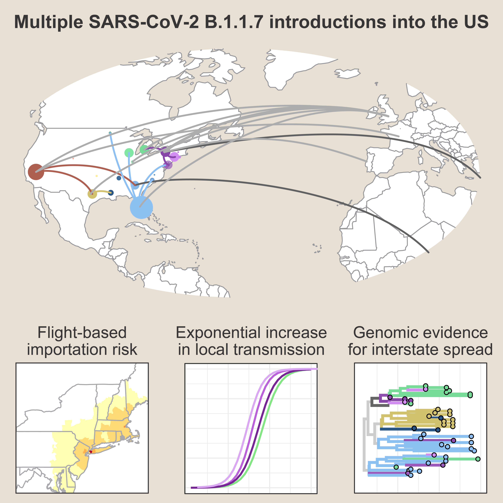

Early introductions and transmission of SARS-CoV-2 variant B.1.1.7 in the United States
The emergence and spread of SARS-CoV-2 lineage B.1.1.7, first detected in the United Kingdom, has become a global public health concern because of its increased transmissibility. Over 2500 COVID-19 cases associated with this variant have been detected in the US since December 2020, but the extent of establishment is relatively unknown. Using travel, genomic, and diagnostic data, we highlight the primary ports of entry for B.1.1.7 in the US and locations of possible underreporting of B.1.1.7 cases. Furthermore, we found evidence for many independent B.1.1.7 establishments starting in early December 2020, followed by interstate spread by the end of the month. Finally, we project that B.1.1.7 will be the dominant lineage in many states by mid to late March. Thus, genomic surveillance for B.1.1.7 and other variants urgently needs to be enhanced to better inform the public health response.